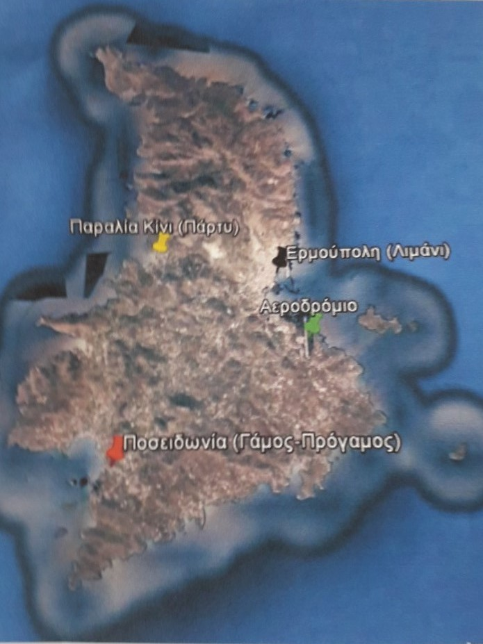

Και για να μη χαθείτε, παρακάτω υπάρχει χάρτης με τις σημαντικές τοποθεσίες για το γάμο.
Επίσης, για αυτούς που θα έχουν μεγάλη άδεια και θέλουν να εξερευνήσουν τις ομορφιές της Σύρου, παραθέτουμε μερικές από τις προσωπικές μας προτιμήσεις.
- Τα Βαπόρια στην Έρμούπολη είναι από τις πιο γραφικές συνοικίες της Σύρου.
Το καφέ μπαρ Ciel είναι σε μια τοποθεσία ιδανική τόσο για μπάνιο όοο και για βράδυ.
- Για μπάνιο προτείνουμε ομόφωνα την (οργανωμένη) παραλία Δελφίνι, μια από τις πιο όμορφες της Σύρου.
- Το beach bar Ονο στην παραλία των Αγκαθωπών είναι ένας πολύ ωραίος χώρος, τόσο για μπάνιο το πρωί όσο κα
για κρασί το βράδυ.
- Στην Ποσειδωνία υπάρχει το πολύ όμορφο μπιστρό Le Perroquet Tranquille για καφέ και φαγητό.
- Εννοείται απαραιτήτως βόλτα στα γραφικά στενάκια της Άνω Σύρου και της Ερμουπολής..
- ...και μπορείτε να καταλήξετε στο Άμβυξ για ιταλικό ή στο Didadi για παγωτό.

Στην περίπτωση που θελήσετε να νοικιάσετε αυτοκίνητο έχουμε έλθει σε επαφή με τα παρακάτω πρακτορεία για εξασφάλιση καλύτερης τιμής για μια ή περισσότερες ημέρες: